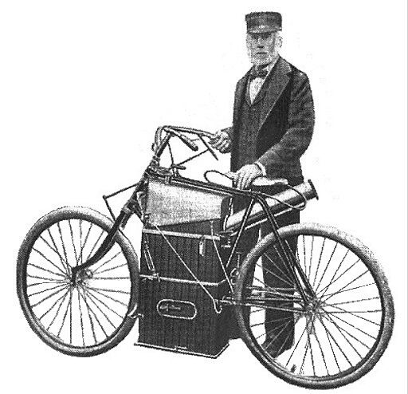

La primera motocicleta
¿QUIÉN INVENTÓ LA PRIMERA MOTO?¿CUÁNDO SE CREO?
Para ver la primera motocicleta de la historia hay que remontarse hasta el año 1867, cuando el estadounidense Sylvester Howard Roper creó un motor de vapor con dos pistones de 164cc cada uno, que era accionado por carbón. Lo hizo en la ciudad de Springfield en plena guerra civil norteamericana.
Howard Roper falleció en el año 1886 mientras conducía su motocicleta a 64 km/h, tratando de romper el récord de velocidad sobre una motocicleta a vapor.
Este modelo está considerado como la primera motocicleta de la historia, aunque hay mucha gente que asegura que realmente fue 18 años más tarde cuando se creó la moto como tal, ya que hay que recordar que la de Howard Roper era una moto a vapor, más cerca de la bici que de la propia motocicleta.